Для работы с PostgreSQL в NodeJS нам понадобится пакет pg. Ссылка на npm
Допустим у нас есть минимальная конфигурация API на Express
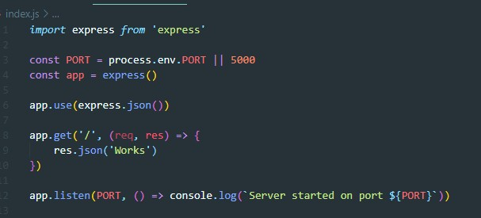В папке с проектом создаем файл bd.js с вот таким содержимым:
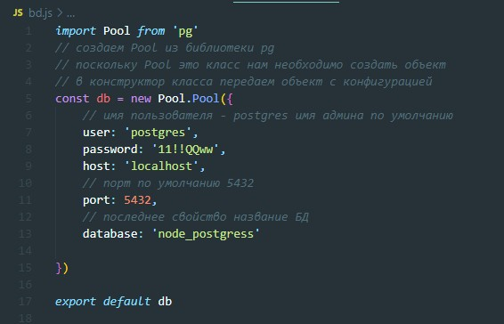Следующим шагом мы создаем таблицы в БД. Для этого в корне проекта создаем файл database.sql. Здесь обращаем внимание на точки с запятой!!!!
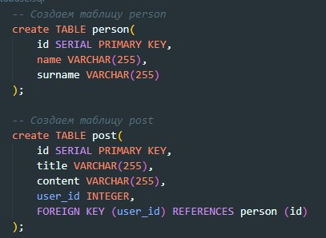Заходим в PowerShell подключаемся к БД и вставляем первый скрипт создания таблицы person
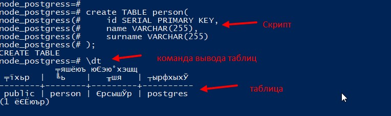Аналогично создаем вторую таблицу
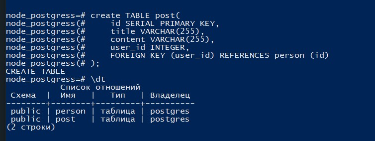Создаем две папки routers и controllers в корне проекта, там соответственно создаем файлы user.routers.js и user.controllers.js
Файл контроллера пока выглядит вот так
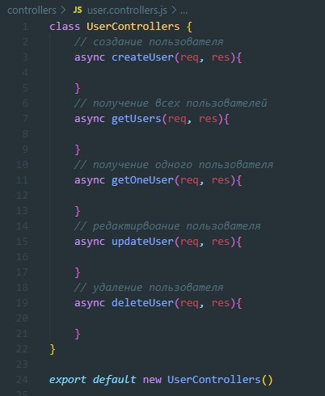Файл маршрута выглядит пока так
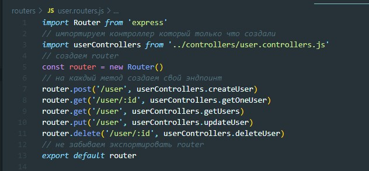Далее в index.js файле импортируем наши маршруты
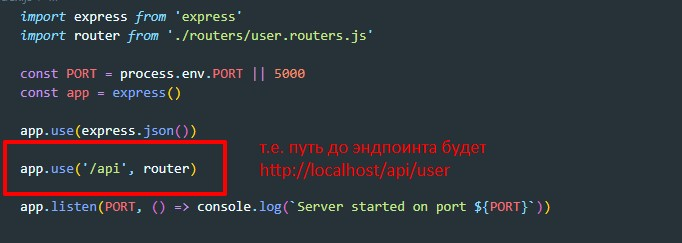Теперь опишем все методы CRUD в нашем контроллере
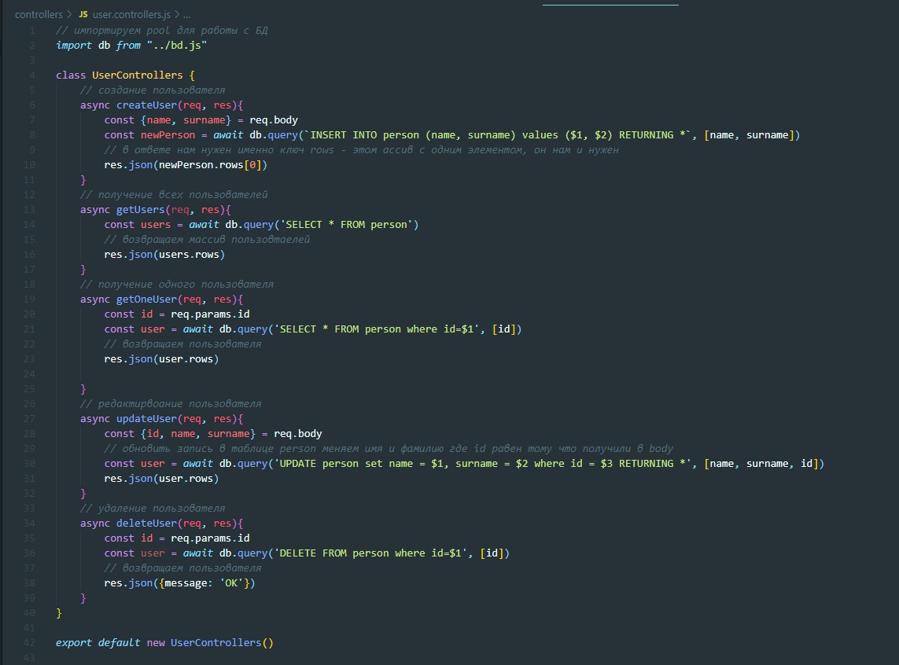Маршруты постов
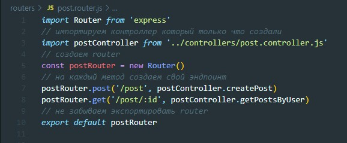Контроллер постов
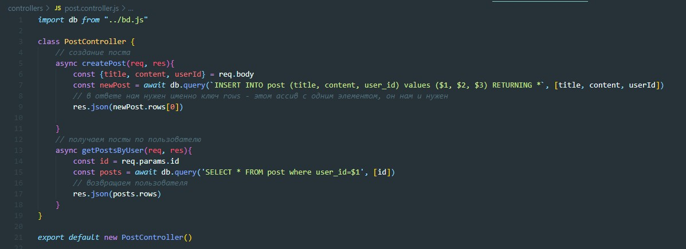Index.js
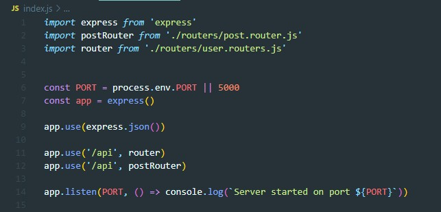